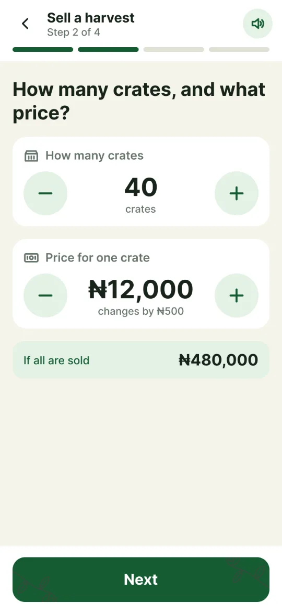
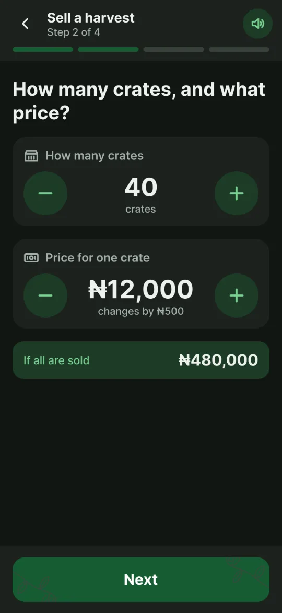
Step 1
List your crates
Tap Tomato or Pepper, set the number of crates and the price, and choose when buyers can collect. With no signal, it saves on the phone and sends later.
For small-scale tomato and pepper farmers in Kano
AgriLink helps farmers list crates of tomatoes and peppers, receive offers directly from buyers, find drivers to move their harvest and book cold-room space.
Works offline · 5 languages with voice support · Built for basic phones
Our story
The tomatoes are ready. The buyer is still a phone call away. What happens to the crates that stay on the farm?
Tomatoes and peppers spoil within days. Many small farmers in Kano have no direct route to buyers, to transport or to cold storage, so they often sell cheaply to middlemen before the harvest goes bad.
AgriLink puts buyers, drivers and cold rooms in the farmer's hand, and keeps working when the signal drops.
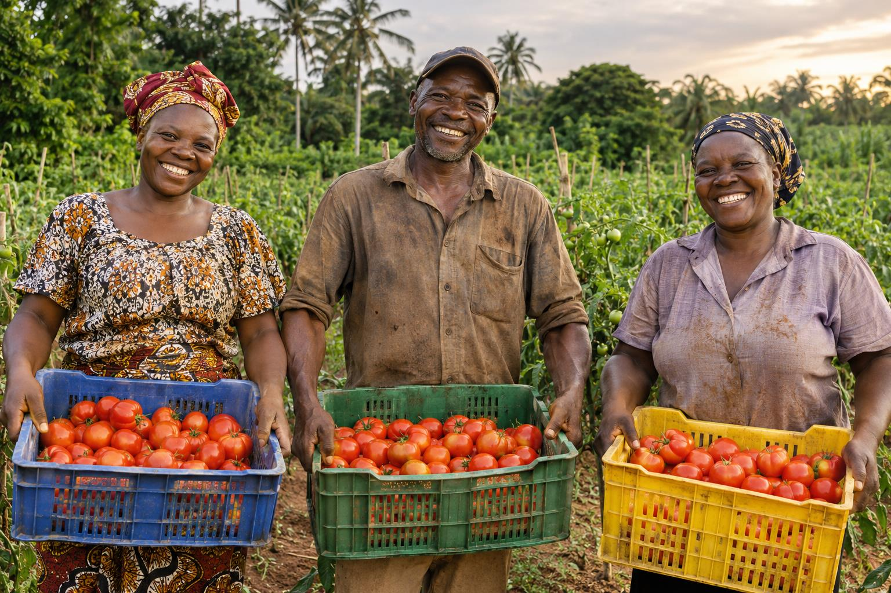
How it works
Real screens from the app. Big buttons, few words, and a speaker on every screen that reads it aloud.


Tap Tomato or Pepper, set the number of crates and the price, and choose when buyers can collect. With no signal, it saves on the phone and sends later.
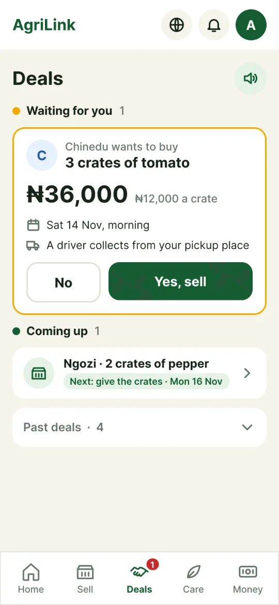
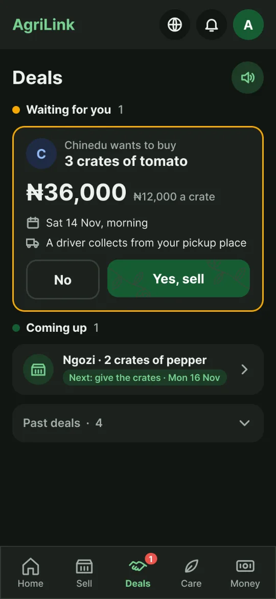
Buyers make an offer. The farmer sees the price for each crate and what they will get, then answers Yes or No. Phone numbers stay private.
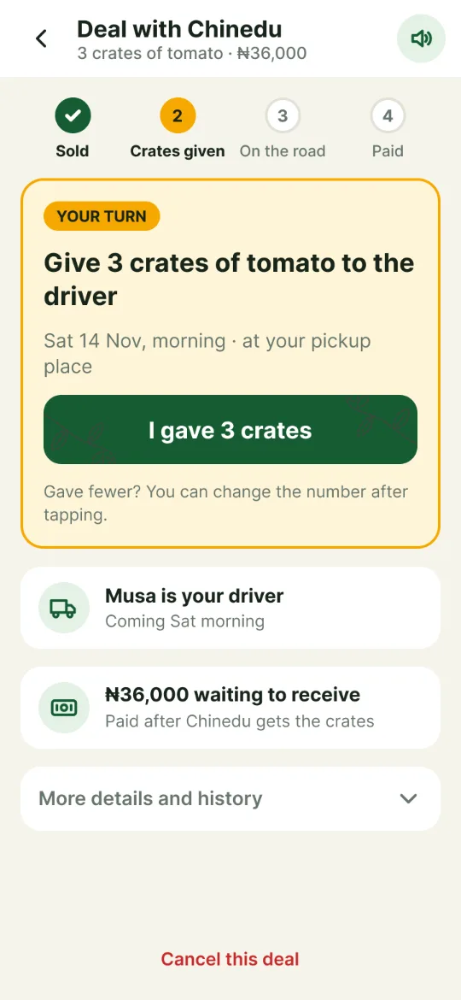
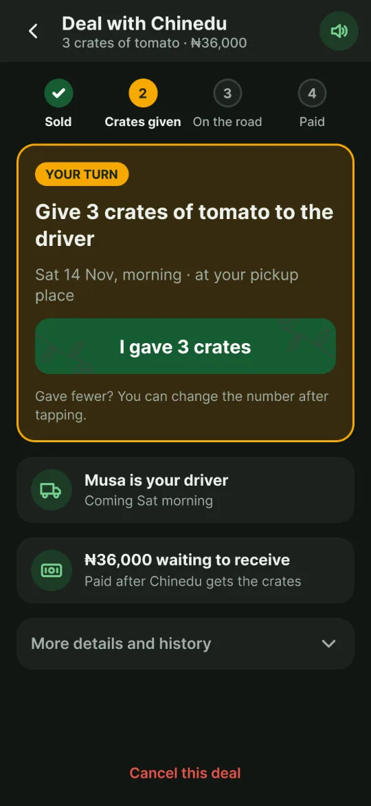
For delivery, AgriLink finds a driver. The buyer can follow the truck on a map, and both sides confirm how many crates arrived.
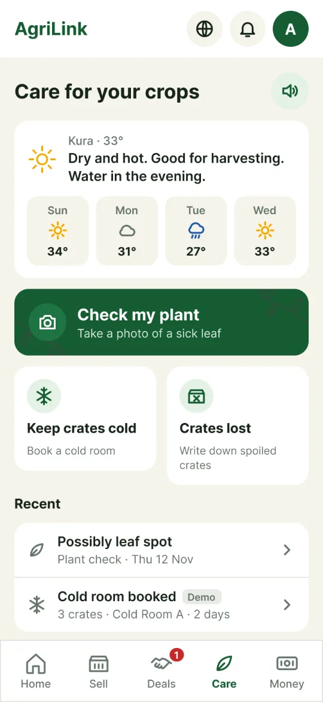
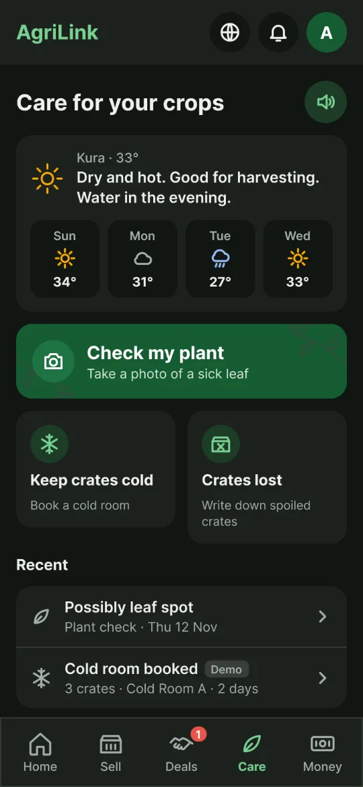
Crates that cannot go today can wait in a cold room, booked from the phone. In the demo, the cold rooms are examples and nothing is charged.
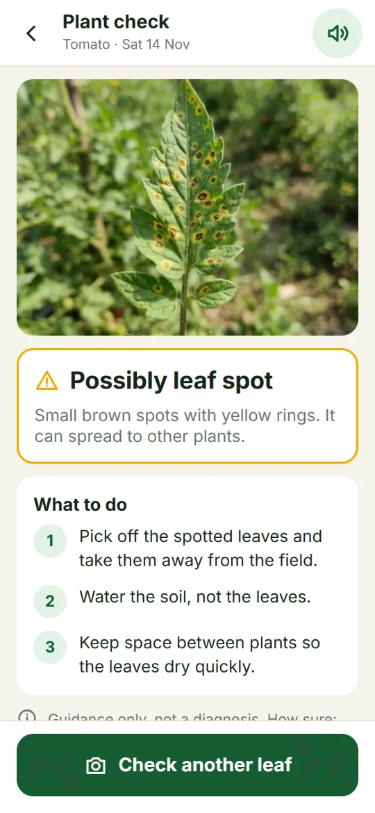
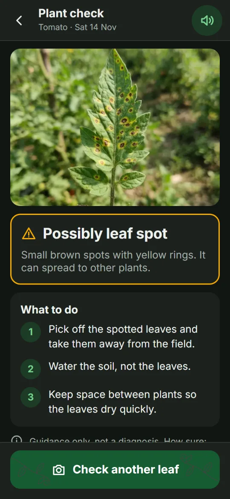
A photo of a leaf gives a first idea of what may be wrong and simple steps for today. It is guidance, not a diagnosis.
Who it's for
The demo uses sample data. No sign-up is needed: one tap on the app's welcome page signs you in as any of them.
List crates of tomatoes or peppers, see offers from buyers, and say yes with one tap.
Try it as a FarmerFind harvests near Kura and Bunkure, make an offer on one screen, and follow the delivery.
Try it as a BuyerDrivers see today's job and share the route. Agents act for farmers who have no phone.
Try it as a Driver or AgentSee requests for cold-room space and confirm or decline each one with a single tap.
Try it as a Cold-room operatorBuilt for the field
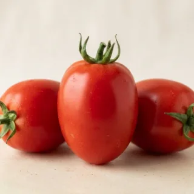
Everything is saved on the phone first and sent once there is signal. Nothing is lost when the network drops.
A small app that opens fast in the browser, with big buttons and short words.
Hausa, English, Yoruba, Igbo and Pidgin.
A speaker button reads the screen aloud for people who read less.
Buyers and farmers never see each other's phone numbers.
Money is paid between the people themselves, outside AgriLink. AgriLink never holds or moves money. It charges a small fixed fee of ₦500 per completed deal, and a cancelled deal has no fee.
Built by TechRoom360 and a Kano-focused team for the USPF Changemaker Challenge 2026.